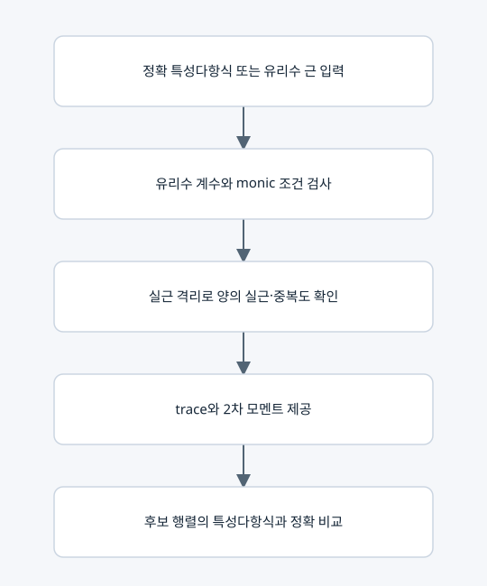

정확 목표 스펙트럼과 모멘트 검사

역할
⑦이 목표 스펙트럼을 정확하게 읽고 비교하도록 하는 자료형이다. 부동소수점 근의 근접 여부로 코스펙트럴을 판정하지 않는다.
사용하는 벡터와 행렬
• 계수 (1,c_1,...,c_n)는 t의 내림차순이며 중복근의 중복도까지 표현한다.
• trace=−c_1, trace_square=c_1²−2c_2 (n=1이면 c_2=0).
• matches(R)는 R의 정확 charpoly 계수가 모두 같은지 검사한다.
입력 규칙
정수, Fraction, 정확 분수/소수 문자열을 허용한다. Python float나 임의 계산식을 문자열로 받아 실행하지 않는다. 현재 접지 LC 모델에서는 모든 μ가 양의 실수여야 한다. 개별 근이 무리수이면 정확 유리수 특성다항식을 사용하는 것이 기본이다.
수치 근의 용도
approximate_values()는 표시나 선택적 교대 투사의 안내에만 쓰인다. 운영 통합 실행의 정수 역탐색에서는 근삿값으로 가지를 제거하지 않는다.
복사 코드와 함수 목록
원본 그대로의 spectral_target.py
exact_fraction, SpectralTarget
표시된 함수 중 예제 생성·교대 투사·수치 행렬은 위 설명의 호출 범위에 따라 보조 기능일 수 있다.